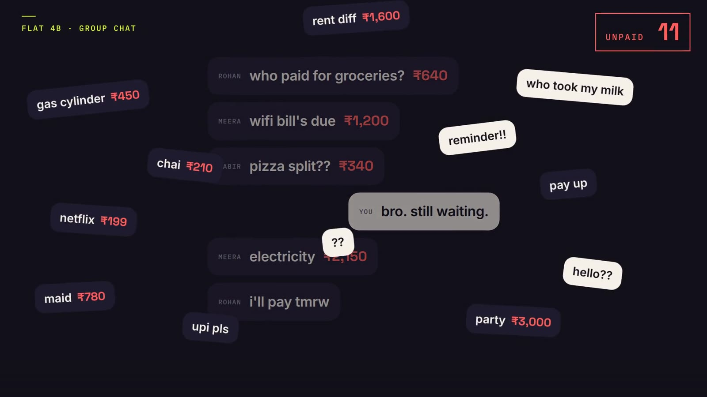
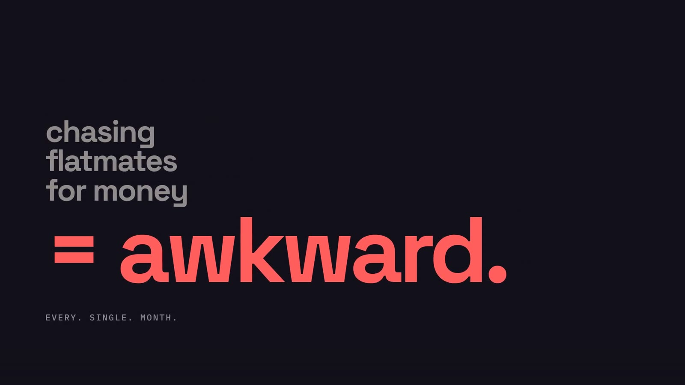
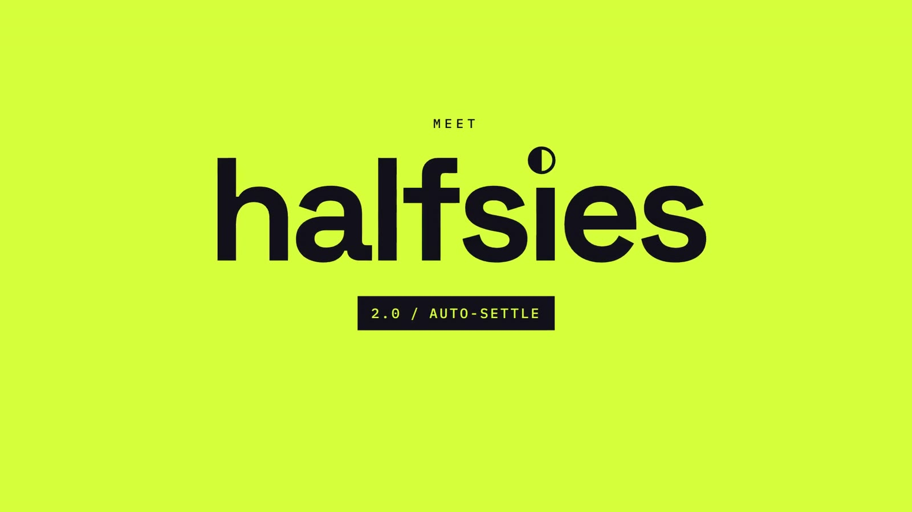
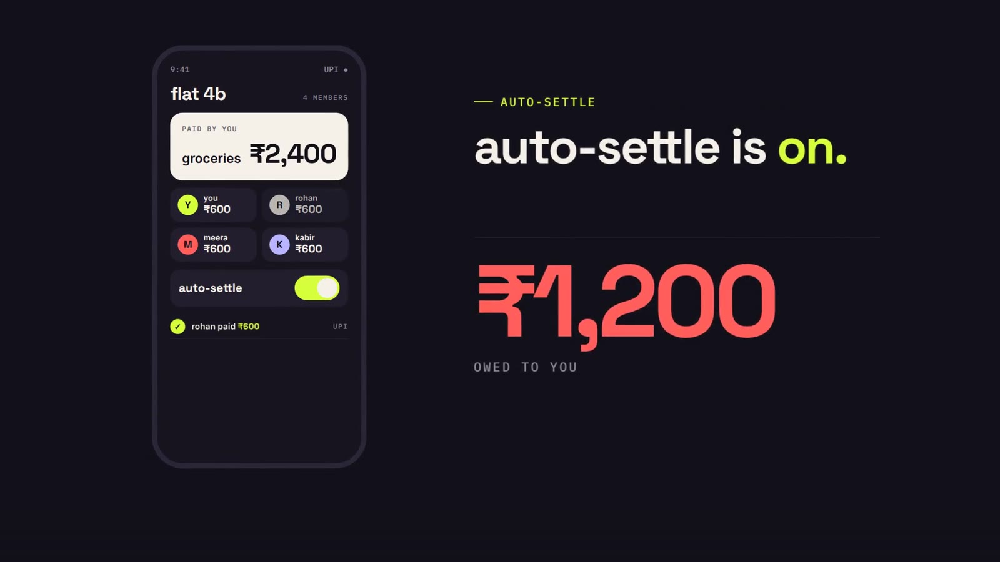
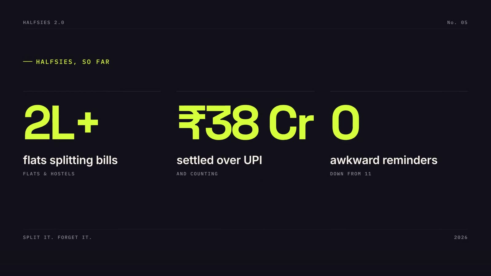
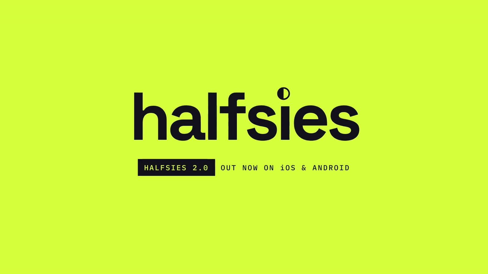

Halfsies
A consumer fintech app for splitting bills with flatmates. Fast, witty kinetic type that feels premium but playful.
Halfsies is a fictional brand. We wrote the brief ourselves and built the film to the same standard and process as client work. All people, stats and quotes in it are invented.
The brief
Launch version 2.0 and its headline feature, Auto-Settle, with pure motion design: no stock footage and no talking heads. It had to feel premium, but never childish.
The idea
Open on a group chat drowning in unpaid bills, a pain every flat-sharer knows, then a half-circle logo literally splits the chaos in two. The product beat is one satisfying moment: a counter falling to ₹0.






How it's made
Bold lowercase grotesk type on a two-register system (dark ink and electric lime), with coral reserved for the problem. Chat bubbles, counters and the phone UI are all built as live, animatable layers, so every number counts and every card springs.
Type: Space Grotesk · Inter · IBM Plex Mono
Credits
Concept, script, art direction, animation, sound design and edit: NexusPulse Studio.